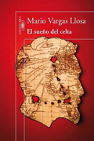
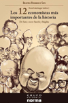
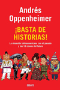
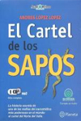
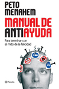

Sistema Rendicion de Examen
"25 Años formando jóvenes líderes del mañana"
Noticias Actuales
Fiebre por Vargas Llosa, En un mes se vendieron más libros que en cinco años
Tras la noticia de que Mario Vargas Llosa se convirtió en el ganador del Premio Nobel de Literatura, miles de limeños arrasaron con las obras del destacado escritor, superando en un mes, el límite de ventas alcanzado en cinco años. Así lo dio a conocer Mercedes Gonzalez, gerenta de ediciones general de Alfaguara en Lima, empresa que maneja los derechos de sus libros. Por este motivo, la casa editorial se vio obligada a reimprimir el íntegro de la colección Vargas Llosa que tienen en cartera, que en total suman 31 títulos. Títulos como "La guerra del fin del mundo" o "Conversación en la Catedral" volvieron a liderar las listas de más comprados junto con sus más recientes "Travesuras de la niña mala" y "La fiesta del Chivo", según informa la agencia Andina. Con relación a su última publicación, "El sueño del Celta", causó más de una sorpresa pues cuando aún no se imprimía, ya se encontraba en las relaciones de más vendidos en diversos países como España.
Escritor argentino Daniel Ripoll gana premio de cuento "Juan Rulfo"
Por su obra "El arenero", el escritor argentino Daniel Ripoll resulto ganador del Premio Internacional de Cuento "Juan Rulfo", convocado por Radio Francia Internacional RFI, el Instituto Cervantes, la Casa de América Latina y el Instituto de México en Paris. En una ceremonia realizada en la Casa de América Latina de Paris, la presidenta del jurado, Grecia Cáceres, destacó que el cuanto de Ripoll "aborda todos los registros de la tradición mas popular". El texto se impuso ante las otras mil 693 obras por "la concisión, el tratamiento del tiempo y la belleza de una lengua que ilumina nuestras zonas ocultas", en un relato sobre el amor no correspondido, destacó el jurado. Además, se alzaron con una mención especial los otros dos finalistas del certamen por los títulos "La reparación", de la argentina Adriana Raquel Romano, y por "La continuidad de Los Borges", del venezolano Aquiles Gabriel Zambrano.
RANKING GENERAL 2011
Numero 1
El Sueño del Celta
Mario Vargas Llosa
Casement fue uno de los primeros europeos en denunciar los horrores del colonialismo con argumentos. De sus viajes al Congo Belga y a la Amazonía peruana descubrió una verdad dolorosa, no era la barbarie africana ni amazónica la que volvía bárbaros a los civilizados europeos, eran ellos, en nombre del comercio, la civilización y el cristianismo, quienes cometían los actos más bárbaros.
Numero 3
Los 12 economistas más importantes de la historia
Smith/Stiglitz
Entre los doce economistas incluidos en esta selección figuran Adam Smith, David Ricardo, Carlos Marx, Léon Walras, John Maynard Keynes, Friedrich August von Hayek, Peter Drucker, Milton Friedman, John Forbes Nash, Amartya Sen, Joseph Stiglitz y el peruano Hernando de Soto.
Numero 2
Usted S.A.
Inés Temple
¿Todavía piensa encontrar el trabajo seguro para toda la vida? ¿Sigue buscando empleo en función de lo que le ofrece una empresa? ¿Cree que lo mejor de un empleo es la remuneración económica? Inés Temple, presidenta de DBM Perú, derriba antiguos paradigmas laborales en este libro.
Numero 4
Basta de historias
Andrés Oppenheimer
Periodista cardinal y siempre dispuesto a desafiar las modas políticas del momento con inteligencia y humor, Andrés Oppenheimer demuestra en este libro que mejorar sustancialmente la educación, la ciencia, la tecnología y la innovación no es tarea imposible, pero sí tremendamente necesaria.
Novedades de Libros
El Cartel de los Sapos
Andrés Lopez
Esta es la historia, hasta hoy desconocida, de uno de los más poderosos carteles del narcotráfico en el mundo: el cartel del Norte del Valle. Tan poderoso y violento como el cartel de Medellín de Pablo Escobar, y tan influyente y multimillonario como el cartel de Cali de los hermanos Rodríguez, los sucedió a ambos en el negocio internacional del tráfico de cocaína y extendió sus tentáculos hasta México, Venezuela, Estados Unidos y varios países de Europa. Pronto los nombres de sus jefes entraron a formar parte de una leyenda negra, por sus cuantiosas operaciones y sus extravagancias, y al final por sus sanguinarias venganzas.
Manual de Antiayuda
Peto Menahen
La vida es un periodo de tribulaciones, inquietud y angustia en el que constantemente todos nos hacemos muchas preguntas: ¿De qué manera educar a nuestros hijos? ¿Cómo construir una personalidad con fisuras? ¿Cómo interactuar con los vecinos? ¿Qué podemos hacer para pulverizar nuestra autoestima? Las respuestas a estos y otros interrogantes están reunidas aquí, en el primer y más completo Manual de Antiayuda.